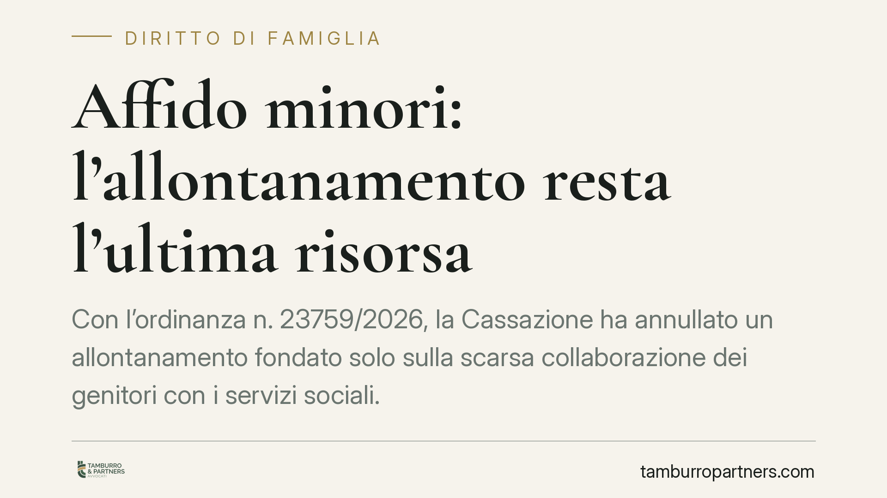

Affido minori: l'allontanamento resta l'ultima risorsa
Con l'ordinanza n. 23759/2026, la Cassazione ha annullato un allontanamento fondato solo sulla scarsa collaborazione dei genitori con i servizi sociali. Il messaggio è netto: separare un minore dalla famiglia d'origine è misura estrema, mai automatica, e va giustificata da un pericolo concreto e non altrimenti eliminabile.

Il caso
Una madre si era vista allontanare il figlio sulla base, in sostanza, della mancata adesione al percorso proposto dai servizi sociali. La Corte di appello aveva confermato la misura. La Cassazione ha invece cassato la decisione, riportando l'attenzione su un principio spesso trascurato nella prassi: l'allontanamento dalla famiglia d'origine è l'ultima delle opzioni, non la prima risposta a una situazione di conflitto o di difficoltà genitoriale.
Inquadramento normativo
Il punto di partenza è l'art. 1 della Legge n. 184/1983, che afferma il diritto del minore a crescere ed essere educato nella propria famiglia. Solo quando questo non è possibile intervengono le misure di protezione, secondo una scala di gradualità.
A questo si affianca l'art. 315-bis c.c., che riconosce al minore il diritto di essere mantenuto, educato, istruito e assistito moralmente dalla famiglia, e l'art. 8 della Convenzione europea dei diritti dell'uomo (CEDU), che tutela la vita familiare. La giurisprudenza della Corte di Strasburgo è costante: l'allontanamento è un'ingerenza tollerabile solo se necessaria, proporzionata e sostenuta da motivi "rilevanti e sufficienti".
La Cassazione, con l'ordinanza n. 23759/2026, cuce insieme queste fonti e ne trae una regola operativa chiara: la misura ablativa (cioè che priva il genitore della relazione quotidiana con il figlio) richiede un pericolo reale, attuale e non altrimenti eliminabile. Tre requisiti che devono coesistere.
Cosa significa in concreto
Il profilo più significativo riguarda il rapporto con i servizi sociali. La mancata collaborazione del genitore, da sola, non basta a fondare l'allontanamento. È un elemento da valutare, non una prova automatica di inadeguatezza.
Questo perché la scarsa collaborazione può avere cause diverse: sfiducia, incomprensioni, fragilità personali, difficoltà comunicative. Nessuna di queste, di per sé, mette il minore in pericolo. Il giudice deve invece verificare se esiste un rischio concreto per il bambino e se quel rischio può essere neutralizzato con misure meno invasive.
La gradualità impone infatti di percorrere prima le alternative: sostegno alla genitorialità, controlli, prescrizioni, affiancamento educativo. Solo quando queste risultino inefficaci o inadeguate, e il pericolo permanga attuale, l'allontanamento diventa legittimo.
Implicazioni pratiche per il genitore
Per chi vive un procedimento di questo tipo, la decisione offre argomenti difensivi solidi. Un provvedimento che si limiti a richiamare la "non collaborazione" senza indicare un pericolo specifico è vulnerabile in sede di impugnazione.
Allo stesso tempo, la pronuncia non autorizza a sottovalutare i rapporti con i servizi. La collaborazione resta un fattore che il giudice considera: rifiutarla in modo pregiudiziale può comunque incidere sulla valutazione complessiva della capacità genitoriale. Il punto è che deve esserci un nesso dimostrato tra il comportamento del genitore e il rischio per il minore.
Per i servizi sociali e per i giudici di merito, l'indicazione è di motivare in modo puntuale: descrivere il pericolo, spiegare perché è attuale, dare conto delle alternative valutate e scartate.
Cosa fare in concreto
- Documentate ogni interazione con i servizi sociali: date, incontri, proposte ricevute e risposte fornite. Una collaborazione dimostrabile indebolisce l'accusa di inadeguatezza.
- Chiedete che il provvedimento indichi il pericolo specifico: pretendete che l'allontanamento sia motivato con fatti concreti, non con formule generiche.
- Proponete misure alternative: sostegno educativo, controlli, percorsi di supporto. Mettere sul tavolo soluzioni graduali rafforza la posizione.
- Valutate l'impugnazione se manca l'attualità del rischio: un pericolo passato o meramente ipotetico non regge alla luce di questa ordinanza.
- Fatevi assistere tempestivamente: nei procedimenti minorili i tempi sono stretti e le prime fasi condizionano l'intero percorso.
---
*Contributo informativo a cura di Tamburro & Partners - Avv. Giuseppe Tamburro. Non costituisce parere legale.*
Ogni famiglia ha il suo equilibrio.
Separazione, divorzio, affidamento, assegno: se vuoi un confronto riservato su una specifica situazione, scrivi allo studio. Ti rispondiamo entro un giorno lavorativo.